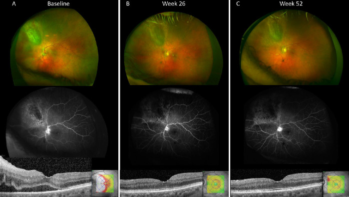
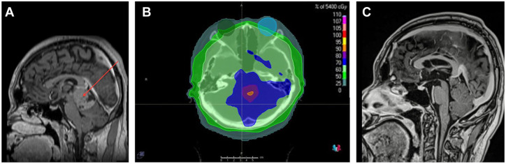
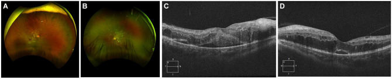
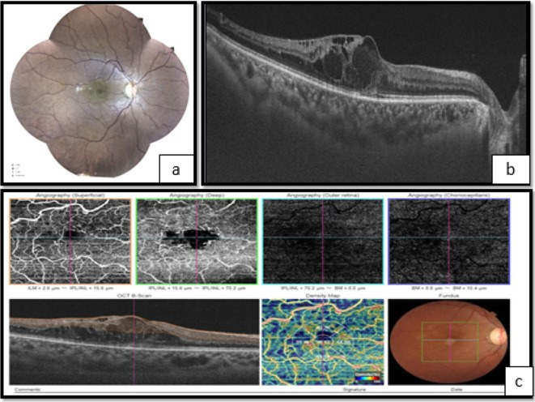
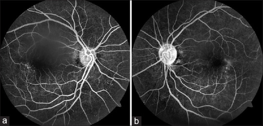

1409 — Bệnh võng mạc do xạ sau xạ trị u nội nhãn/hốc mắt: phân biệt tổn thương do xạ với TÁI PHÁT U / Radiation retinopathy after radiotherapy for intraocular or orbital tumors
Tags: pattern:vi-mach-tac pattern:phu-hoang-diem pattern:xuat-huyet-vong-mac vung:vong-mac vung:hoang-diem vung:dia-thi protocol:OCT-OCTA protocol:FA-FAF protocol:anti-VEGF protocol:laser-PRP
Mức chắc chắn (certainty): tổng hợp y văn (literature synthesis) — đọc trực tiếp toàn văn 9 bài mở qua Europe PMC/PMC. 3 ca nguyên văn (verbatim case) dùng cho Blind Quiz. Phần phân biệt tổn thương do xạ với tái phát u và phần tính liều tương đương sinh học (BED) là suy luận (inference) từ cơ chế + dữ liệu liều–phân liều, ghi rõ tại chỗ; không có thử nghiệm đối chứng nào trả lời trực tiếp.
1. Tổng quan bệnh học – cơ chế hình ảnh
1.1. Bản chất: bệnh vi mạch TẮC NGHẼN tiến triển, không phải "viêm do xạ"
- Bệnh học (pathology): tia ion hóa gây đứt sợi đôi DNA ở tế bào nội mô mao mạch và tế bào cận mao mạch (pericyte) — hai loại tế bào có tốc độ phân bào đủ để tích lũy tổn thương. Hệ quả là mất dần giường mao mạch, huyết khối vi mạch, thiếu máu cục bộ võng mạc, tăng sinh VEGF, phá vỡ hàng rào máu–võng mạc (J Contemp Brachytherapy 2023, PMC10669920; Clin Ophthalmol 2021, PMC8436254).
- Vì sao hình ảnh giống võng mạc đái tháo đường: cùng một chuỗi tắc mao mạch → thiếu máu → phù → tân mạch, nhưng nguyên nhân là liều xạ tại chỗ, không phải tăng đường huyết toàn thân. Đây là lý do bệnh sử xạ trị là chốt chẩn đoán, không phải hình thái tổn thương.
1.2. Vì sao có "thời gian ủ bệnh" 6 tháng – 3 năm (dao động 1 tháng – 15 năm)
- Tổn thương không biểu hiện ngay vì mao mạch có dự trữ chức năng: chỉ khi số tế bào nội mô mất vượt ngưỡng mới xuất hiện vùng không tưới máu (nonperfusion) nhìn thấy được.
- Vì sao liều mỗi phân liều (fraction) quan trọng hơn tổng liều: mô mạch muộn có α/β ≈ 2–3 Gy. Tính liều tương đương sinh học BED = nd(1 + d/(α/β)) với α/β = 2 Gy:
- 20 Gy chia 2 phân liều 10 Gy → BED₂ = 20 × (1 + 10/2) = 120 Gy₂;
- 50 Gy chia 25 phân liều 2 Gy → BED₂ = 50 × (1 + 2/2) = 100 Gy₂.
- Nghĩa là 20 Gy nhưng 10 Gy/lần "nặng" hơn 50 Gy chuẩn 2 Gy/lần. Đây chính là ca nguyên văn: nữ 44 tuổi, proton 20 Gy trong 2 lần × 10 Gy vào hoàng điểm, xuất hiện bệnh thần kinh thị do xạ (RON) + bệnh võng mạc do xạ sau 18 tháng, dù tổng liều "dưới ngưỡng an toàn 50 Gy" (Am J Ophthalmol Case Rep 2016, PMC5757416).
- Ngược lại, siêu phân liều < 1,9 Gy/lần làm giảm nguy cơ bệnh võng mạc do xạ (PMC8436254).
1.3. Vì sao OCT/FA/OCTA cho đúng những dấu hiệu đó
| Hiện tượng | Cơ chế mô – vật lý | Dấu hiệu trên hình ảnh |
|---|---|---|
| Phù hoàng điểm dạng nang | VEGF làm tăng tính thấm mao mạch → dịch vào lớp nội bào; dịch tích trong lớp plexiform/INL tạo khoang giảm phản xạ (hyporeflective) | SD-OCT: khoang giảm phản xạ nội võng mạc, dày trung tâm hoàng điểm (CMT) > 300 µm; có thể kèm dịch dưới võng mạc |
| Xuất tiết cứng (hard exudate) | Rò lipid + protein theo dịch lâu ngày, đọng ở lớp ngoài | Đốm tăng phản xạ, có bóng lưng (posterior shadowing) trên OCT; vàng sáng trên ảnh màu |
| Nốt bông (cotton-wool spot) | Nhồi máu lớp sợi thần kinh (RNFL) do tắc tiểu động mạch | Đốm trắng mờ bờ không rõ; OCT: dày + tăng phản xạ RNFL |
| Vi phình mạch / giãn mạch dạng telangiectasia | Thành mao mạch mất tế bào cận mao mạch → giãn, rò | FA: chấm tăng huỳnh quang sớm, rò muộn; OCTA: mất mạng mao mạch quanh hoàng điểm, FAZ giãn rộng |
| Vùng không tưới máu | Tắc mao mạch thật (không phải co thắt) | FA: vùng tối (hypofluorescent); OCTA: mất tín hiệu dòng chảy trong slab tương ứng |
| Tân mạch đĩa/võng mạc | Thiếu máu → VEGF → tăng sinh | FA: rò mạnh thì muộn, đĩa NVD/NVE; dễ xuất huyết dịch kính |
1.4. Những con số phải nhớ (liều – tần suất – thời điểm)
| Tình huống | Liều / phân liều | Hệ quả định lượng | Nguồn |
|---|---|---|---|
| Xạ ngoài vào ≥ 1/2 võng mạc | 45–55 Gy | 53% bệnh võng mạc do xạ | Parsons, dẫn trong PMC8436254 |
| Xạ ngoài | > 50 Gy vào > 60% võng mạc | Nguy cơ cao hơn rõ rệt | Takeda, dẫn trong PMC8436254 |
| Xạ toàn não (globe nằm trong trường) | Trung vị 40,7 Gy (30–50 Gy) | 13 ca / 25 mắt vẫn có bệnh võng mạc do xạ; không ca nào đái tháo đường | PMC12370669 |
| Xạ ngoài / proton | 20 Gy trong 2 lần × 10 Gy | RON + bệnh võng mạc sau 18 tháng (BED₂ ≈ 120 Gy₂) | PMC5757416 |
| Brachytherapy mảng (plaque) | Liều đỉnh u, tùy vị trí u | Bệnh võng mạc do xạ 20–53% | PMC10669920 |
| Plaque điều trị melanoma màng mạch | Theo COMS | 43% thị lực ≤ 20/200 lúc 3 năm | COMS, dẫn trong PMC10577260 |
| Yếu tố u (plaque) | Đáy u ≥ 10 mm, dày > 8 mm, liều đáy ≥ 33.300 cGy, liều tới đĩa thị tăng | Dự báo thị lực xấu dài hạn | Shields, dẫn trong PMC8436254 |
| Đái tháo đường đồng thời | — | Tăng nguy cơ mất thị lực ~300% (hiệp lực tổn thương nội mô + cận mao mạch) | PMC8436254 |
| Thời điểm khởi phát | — | Thường 6 tháng – 3 năm; toàn khoảng 1 tháng – 15 năm; thể tăng sinh trung bình 32 tháng, 7% xuất hiện ở 10–15 năm | PMC8436254 |
- Cạm bẫy số 1 về liều: "dưới 50 Gy là an toàn" là sai khi phân liều lớn hoặc khi globe nằm trong trường chiếu toàn não/toàn trục thần kinh — trường hợp xạ toàn não trung vị 40,7 Gy vẫn gây bệnh (PMC12370669).
- Mắt đối bên không được miễn trừ: tán xạ + trường chiếu rộng có thể gây tổn thương hai mắt, kể cả 17 năm sau xạ vòm họng (PMC10155549).
2. Mẫu hình + chẩn đoán phân biệt theo vị trí (gamut)
2.1. Mẫu hình chung
Bệnh vi mạch tắc nghẽn + phù hoàng điểm ở mắt có tiền sử xạ trị trong trường chiếu, phân bố theo hình chiếu của chùm tia (sector/địa lý), không theo lãnh thổ mạch máu, tiến triển chậm trong nhiều tháng–năm, thường kèm tổn thương da/mi/mô mềm cùng vùng chiếu.
2.2. Gamut theo vị trí tổn thương
| Vị trí | Thực thể | Manh mối chốt |
|---|---|---|
| Hoàng điểm | Bệnh hoàng điểm do xạ (radiation maculopathy, RM) | Phù nang hoàng điểm + vùng không tưới máu quanh hoàng điểm; không có khối u tại hoàng điểm; đáp ứng anti-VEGF |
| Đĩa thị | Bệnh thần kinh thị do xạ (radiation optic neuropathy, RON) | Phù đĩa thị + xuất huyết quanh đĩa, giảm thị lực không đau, xuất hiện trung bình 18 tháng; MRI: ngấm thuốc đầu dây thần kinh thị (PMC5757416) |
| Võng mạc ngoại vi | Bệnh võng mạc do xạ thể tăng sinh | Tân mạch đĩa/võng mạc, xuất huyết dịch kính, dính võng mạc; thường sau vùng chiếu; có thể tiến triển tới glaucom tân mạch |
| Tiền phòng / bề mặt nhãn cầu | Viêm giác mạc do xạ, đục thể thủy tinh sau dưới bao (PSC), khô mắt | Đồng thời với RM ở ca xạ 75 Gy (PMC10523097) — đừng quy mọi giảm thị lực cho võng mạc |
| Hắc mạc | Teo hắc mạc – võng mạc do xạ, bong thanh dịch | Vùng teo khớp hình chiếu; không dày hắc mạc (khác u) |
2.3. Gamut theo "phù hoàng điểm ở mắt đã xạ trị"
- Bệnh hoàng điểm do xạ (phù do rò VEGF).
- Tái phát u / u tiến triển (melanoma, lymphoma, di căn) — dịch dưới võng mạc do u, kèm dày u trên siêu âm.
- Phù do đái tháo đường (nếu có ĐTĐ — hiệp lực, không loại trừ nhau).
- Tắc tĩnh mạch võng mạc (CRVO/BRVO) — một vùng theo lãnh thổ, đĩa thị phù, không có tiền sử xạ.
- Hội chứng thiếu máu mắt (ocular ischemic syndrome) — hẹp động mạch cảnh, dòng chảy đảo, phù + tân mạch tiền phòng.
- Bệnh hoàng điểm liên quan tuổi (AMD) / CNV — tiến triển nhanh, có màng tân mạch trên OCTA.
- Viêm nội nhãn/TASS sau tiêm hoặc sau mổ — khởi phát cấp trong 1–3 ngày, khác hoàn toàn.
3. Bảng so sánh phân biệt (ma trận đối chiếu)
| Thực thể (entity) | Hình ảnh điển hình (màu / FA / OCT / OCTA) | Chốt vào (rule-in) | Chốt loại (rule-out) | Gợi ý xác nhận |
|---|---|---|---|---|
| Bệnh hoàng điểm do xạ (RM) | Xuất huyết chấm + vi phình mạch + telangiectasia quanh hoàng điểm; FA: chấm tăng huỳnh quang sớm, rò muộn; OCT: phù nang nội võng mạc, CMT > 300 µm; OCTA: FAZ giãn, mất mạng mao mạch sâu/nông | Tiền sử xạ trong trường chiếu + tổn thương khớp hình chiếu + không có khối u mới; đáp ứng anti-VEGF (CMT giảm) | Không dày u trên siêu âm; không ngấm thuốc khối trên MRI; thị lực giảm từ từ, không đau | So bản đồ liều xạ với vùng tổn thương; chụp lại OCT sau 4–6 tuần điều trị |
| Tái phát / tiến triển u màng mạch | Siêu âm: dày u tăng ≥ 1–2 mm so với lần trước; OCT: dịch dưới võng mạc trên u, không phù nang lan tỏa; FAF: quầng cam (orange pigment) mới | Khối u dày lên theo thời gian + dịch dưới võng mạc khu trú trên u + tăng sinh mạch trong u | U không đổi kích thước qua 2 lần đo; không có dịch dưới võng mạc mới | Siêu âm A/B cùng người đo, so ảnh cũ; MRI hốc mắt khi nghi lan ngoài nhãn cầu |
| Bệnh thần kinh thị do xạ (RON) | Đĩa thị phù, xuất huyết quanh đĩa; OCT RNFL dày; MRI: ngấm thuốc đầu dây thần kinh thị | Tiền sử xạ gần đĩa thị + phù đĩa không đau + ngấm thuốc đầu dây thần kinh trên MRI | Không có khối u đĩa thị; không thiếu máu thị thần kinh động mạch (không đau, không altitudinal) | MRI hốc mắt có cản quang; theo dõi RNFL/OCT |
| Bệnh võng mạc đái tháo đường | Xuất huyết, vi phình mạch, xuất tiết cứng hai bên đối xứng; FA: thiếu máu lan tỏa | ĐTĐ + HbA1c + tổn thương đối xứng hai mắt, không khớp trường chiếu | Không tiền sử xạ; tổn thương ngoài vùng chiếu | Xét nghiệm HbA1c; so hai mắt |
| Tắc tĩnh mạch võng mạc (CRVO/BRVO) | Xuất huyết theo lãnh thổ, đĩa thị phù; FA: rò muộn theo vùng tắc | Phân bố theo lãnh thổ mạch + một mắt; khởi phát đột ngột | Không tiền sử xạ; tổn thương không khớp hình chiếu | FA/CT mạch máu; khám mạch cảnh nếu trẻ |
| Hội chứng thiếu máu mắt | Phù hoàng điểm + tân mạch tiền phòng; FA: dòng chảy chậm, đảo | Hẹp động mạch cảnh cùng bên; triệu chứng thần kinh | Không có hẹp mạch cảnh trên CTA/DSA | Siêu âm Doppler mạch cảnh, CTA |
| Viêm nội nhãn sau tiêm | Mủ tiền phòng, fibrin, giảm thị lực nhanh trong 1–3 ngày | Khởi phát cấp sau tiêm + viêm tiền phòng | Khởi phát chậm nhiều tháng, không viêm tiền phòng | Chọc dịch kính cấy; xử trí cấp cứu |
- Ảnh đối chiếu đáp ứng điều trị (aflibercept treat-and-extend, 39 mắt): CMT 484,4 → 326,5 µm sau 52 tuần (p < 0,001), thị lực tăng trung bình +4,3 chữ ETDRS (p = 0,07), 96,7% đạt ≥ 20/200, 30% tăng ≥ 10 chữ (Invest Ophthalmol Vis Sci 2023, PMC10292667).

4. Protocol chụp + hệ phân độ/điểm chuẩn hóa
4.1. Protocol theo dõi mắt đã xạ trị
| Thời điểm | Bộ hình ảnh tối thiểu | Mục đích |
|---|---|---|
| Trước xạ | Ảnh màu đáy mắt, SD-OCT hoàng điểm (ETDRS 1 mm + 6 mm), OCTA 3 × 3 mm và 6 × 6 mm, FA/FAF nếu có xuất tiết; siêu âm A/B với u nội nhãn | Lấy mốc nền; phát hiện bệnh vi mạch dưới lâm sàng |
| 3 tháng/lần trong 2 năm đầu | OCT + OCTA; ảnh màu; đo thị lực ETDRS | Bệnh võng mạc do xạ thường khởi phát 6 tháng – 3 năm |
| 6 tháng/lần từ năm 3 | OCT + ảnh màu; siêu âm u | Bắt tái phát u và thể muộn 10–15 năm |
| Khi thị lực giảm / nhìn mờ | OCT + FA + OCTA + MRI hốc mắt có cản quang | Phân biệt RM / RON / tái phát u |
| Nghi RON | MRI hốc mắt T1 fat-sat sau tiêm; OCT RNFL | Ngấm thuốc đầu dây thần kinh thị là dấu hiệu RON (PMC5757416) |
- Nguyên tắc hình ảnh: OCTA phát hiện giảm mật độ mao mạch quanh hoàng điểm và giãn FAZ trước khi có tổn thương thấy trên đèn khe — đây là lợi ích chính so với FA (PMC10669920, PMC10523097). FA vẫn cần để định lượng vùng không tưới máu và phát hiện tân mạch.
- Đo lường trên OCT: CMT (trung bình vùng 1 mm trung tâm), chiều cao nang lớn nhất, mức độ gián đoạn dải ellipsoid (EZ/IS-OS), teo RPE hoàng điểm.
4.2. Phân độ CJA (cyst – junction – atrophy) cho bệnh hoàng điểm do xạ
| Tham số | Ý nghĩa | Cách đo |
|---|---|---|
| C (cyst) | Chiều cao nang hoàng điểm lớn nhất | µm trên SD-OCT, lát qua trung tâm hoàng điểm |
| J (junction) | Gián đoạn dải IS/OS (ellipsoid zone) | Có/không + chiều dài đoạn gián đoạn (µm) |
| A (atrophy) | Teo RPE vùng hoàng điểm | Có/không trên ảnh màu + FAF |
(Bảng dựng theo phân độ CJA trong PMC10669920; đây là công cụ mô tả, chưa phải hệ phân độ có ngưỡng điều trị được xác nhận độc lập.)
4.3. Ngưỡng điều trị thực hành
- Phù hoàng điểm có triệu chứng (CMT > 300 µm hoặc tăng ≥ 10% kèm giảm ≥ 5 chữ ETDRS) → anti-VEGF nội dịch kính: bevacizumab 1,25 mg, ranibizumab 0,5 mg, aflibercept 2 mg; khởi đầu 3 mũi hàng tháng rồi treat-and-extend (PMC10292667, PMC10669920).
- Đáp ứng kém/rái cáy → implant dexamethasone 0,7 mg hoặc fluocinolone 0,19 mg; corticoid có tác dụng chống phù nhưng không sửa được thiếu máu (PMC10669920).
- Thể tăng sinh → laser quang đông toàn võng mạc (PRP) ± anti-VEGF; xuất huyết dịch kính không tan → cắt dịch kính.
- Dự phòng bằng anti-VEGF (meta 4 nghiên cứu, 2.109 bệnh nhân): giảm bệnh hoàng điểm do xạ OR 0,50 (0,34–0,74), RON OR 0,62 (0,42–0,90), thị lực cuối xấu OR 0,50 (0,37–0,68) — bằng chứng độ chắc chắn thấp, chưa thành chỉ định thường quy (PMC10577260).
flowchart TD
A[Mắt đã xạ trị u nội nhãn/hốc mắt] --> B[Lấy mốc: OCT + OCTA + ảnh màu + siêu âm u]
B --> C{Thị lực giảm hoặc có phù hoàng điểm?}
C -->|Không| D[Theo dõi 3 tháng/lần trong 2 năm đầu, sau đó 6 tháng/lần]
C -->|Có| E{OCT: phù nang hoàng điểm?}
E -->|Không| F{MRI: ngấm thuốc đầu dây thần kinh thị?}
F -->|Có| G[Bệnh thần kinh thị do xạ - RON]
F -->|Không| H[Siêu âm: u dày lên?]
E -->|Có| I{Siêu âm: u dày lên hoặc dịch dưới võng mạc trên u?}
I -->|Có| J[Tái phát/tiến triển u - điều trị u]
I -->|Không| K[Bệnh hoàng điểm do xạ - RM]
H -->|Có| J
H -->|Không| K
K --> L[Anti-VEGF 3 mũi rồi treat-and-extend]
L --> M{CMT giảm và thị lực ổn?}
M -->|Có| N[Tiếp tục treat-and-extend, theo dõi 4-8 tuần]
M -->|Không| O[Đổi sang implant corticoid hoặc phối hợp laser]
5. Biến thể bình thường và cạm bẫy
- Dấu "vòng củ hành" (onion ring sign) — thể mạn, không phải tái phát: các lắng đọng tăng phản xạ xếp lớp ngang trong khoang nang nội võng mạc, không có bóng lưng, nằm ở lớp võng mạc trong. Ca nguyên văn theo dõi 19 năm sau xạ trị melanoma màng mạch cho thấy dấu này xuất hiện ở bệnh võng mạc do xạ rái cáy điều trị, phản ánh tổn thương mạch mạn + phù kéo dài, không phải khối u (Cureus 2025, PMC12740121).
- Cạm bẫy "một nguyên nhân cho mọi giảm thị lực": ca 75 Gy có đồng thời khô mắt, đục thể thủy tinh PSC, bệnh võng mạc do xạ và bệnh thần kinh thị do xạ; anti-VEGF không cải thiện thị lực vì tổn thương thần kinh đã cố định (PMC10523097). Phải khám toàn bộ nhãn cầu, không chỉ OCT hoàng điểm.
- Cạm bẫy "hai mắt = bệnh toàn thân": bệnh võng mạc do xạ có thể hai bên khi trường chiếu rộng (vòm họng, toàn não) và có thể xuất hiện 17 năm sau — không vì thế mà loại trừ nguyên nhân do xạ (PMC10155549).
- Cạm bẫy "đái tháo đường loại trừ do xạ": hai bệnh cộng hưởng; ĐTĐ làm tăng nguy cơ mất thị lực ~300%, không phải bằng chứng chống lại do xạ (PMC8436254).
- Cạm bẫy "phù hoàng điểm = tái phát u": dịch dưới võng mạc do u thường khu trú trên u, kèm u dày lên; phù do xạ lan tỏa quanh hoàng điểm, không kèm u dày. Chốt bằng siêu âm cùng người đo + so ảnh cũ.
- Cạm bẫy liều: "20–40 Gy là an toàn" sai với phân liều lớn hoặc globe trong trường toàn não; luôn đọc bản đồ liều (ảnh dưới) thay vì chỉ nghe tổng liều.

6. Tự lượng giá — Blind Quiz ngay trên trang tĩnh
Ca 1 — nam 24 tuổi, mờ mắt sau xạ toàn trục thần kinh
- Gợi ý lâm sàng: u tuyến tùng, đã xạ sọ–tủy; thị lực 20/150 mắt phải, 20/40 mắt trái.
- Câu hỏi: Mô tả dấu hiệu chính trên ảnh màu và OCT? Ba chẩn đoán phân biệt? Dấu hiệu nào chốt nguyên nhân do xạ?

Bấm để hiện đáp án (findings + chẩn đoán)
- Dấu hiệu (findings): xuất huyết nội võng mạc và nốt bông (cotton-wool spots) ở hai mắt; OCT mắt phải phù hoàng điểm dạng nang (cystoid macular edema). Tổn thương khớp vùng chiếu xạ, không theo lãnh thổ mạch.
- Chẩn đoán (diagnosis): bệnh võng mạc do xạ thể tăng sinh (proliferative radiation maculopathy) sau xạ sọ–tủy — vì tia xạ làm mất mao mạch → thiếu máu → VEGF → phù và tân mạch; đã điều trị bevacizumab hàng tháng + PRP hai mắt, phù cải thiện.
- Bối cảnh định lượng: tổng quan 13 ca/25 mắt sau xạ toàn não, liều trung vị 40,7 Gy (30–50), không ca nào đái tháo đường — chứng minh "liều thấp" vẫn gây bệnh khi globe trong trường.
- Nguồn ảnh: J Vitreoretin Dis 2025, Figure 2 — PMC12370669, CC BY 4.0.
Ca 2 — nữ 31 tuổi, ung thư vòm họng, xạ 75 Gy, hai mắt mờ dần
- Gợi ý lâm sàng: khô mắt, đục thể thủy tinh sau dưới bao, thị lực giảm tiến triển hai bên nhiều năm sau xạ.
- Câu hỏi: OCTA cho thấy gì mà đèn khe không thấy? Vì sao 3 mũi anti-VEGF không cải thiện thị lực?

Bấm để hiện đáp án (findings + chẩn đoán)
- Dấu hiệu (findings): FAZ giãn rộng, mất mạng mao mạch nông và sâu quanh hoàng điểm, phù hoàng điểm rõ hơn mắt phải; đáy mắt có giãn xoắn mạch ngoại vi, mất phản xạ trung tâm hoàng điểm, đĩa thị nhợt nhẹ.
- Chẩn đoán (diagnosis): bệnh võng mạc do xạ + bệnh thần kinh thị do xạ sau xạ 75 Gy cho ung thư vòm họng. Anti-VEGF chỉ sửa phần rò (permeability), không tái tạo mạng mao mạch đã mất và không hồi phục tổn thương thần kinh thị → thị lực không cải thiện.
- Bài học: OCTA phát hiện bệnh vi mạch dưới lâm sàng (giảm mật độ mao mạch, giãn FAZ) trước khi có dấu hiệu trên đèn khe.
- Nguồn ảnh: F1000Research 2023, Figure 1 — PMC10523097, CC BY 4.0.
Ca 3 — nam 40 tuổi, mờ mắt phải 1 tuần, tiền sử xạ 34 Gy cách đây 17 năm
- Gợi ý lâm sàng: ung thư vòm họng đã xạ 34 Gy; thị lực 20/40 phải, 20/20 trái; hai mắt có telangiectasia khu trú, mắt phải phù hoàng điểm.
- Câu hỏi: Dấu hiệu trên FFA? Vì sao gọi là "khởi phát cực muộn"? Điều gì giải thích tái phát sau 3 mũi bevacizumab?

Bấm để hiện đáp án (findings + chẩn đoán)
- Dấu hiệu (findings): FFA thì muộn: vi phình mạch dạng chấm tăng huỳnh quang sớm, telangiectasia mao mạch quanh hoàng điểm, rò muộn (late leakage), không có tân mạch.
- Chẩn đoán (diagnosis): bệnh võng mạc do xạ hai mắt khởi phát cực muộn (17 năm) với phù hoàng điểm mắt phải. Ba mũi bevacizumab 1,25 mg cải thiện ban đầu, nhưng bỏ theo dõi trong đại dịch → phù tái phát; điều trị lại.
- Bài học: bệnh võng mạc do xạ là bệnh mạn, cần treat-and-extend, không phải "tiêm 3 mũi là khỏi"; và khoảng trễ có thể tới 17 năm, nên tiền sử xạ xa vẫn có giá trị.
- Nguồn ảnh: Indian J Ophthalmol 2023, Figure 2 — PMC10155549, CC BY-NC-SA 4.0.
Bài liên quan chéo
- 493 – U lympho nguyên phát của hắc mạc — chẩn đoán phân biệt khối hắc mạc và theo dõi sau xạ.
- 481 – Biến chứng sau liệu pháp gen nội nhãn — viêm/dịch sau can thiệp nội nhãn.
- 495 – Viêm nội nhãn nấm ngoại sinh vs TASS — phân biệt viêm cấp sau tiêm.
- 1404 – Biến chứng mạn của anti-VEGF nội dịch kính — theo dõi dài hạn sau tiêm lặp lại.
- 1408 – Anti-VEGF nội dịch kính trong thai kỳ & cho con bú — chọn phân tử anti-VEGF.
Ảnh
1409_benh-vong-mac-do-xa_Fundus-OCT_PMC12370669.jpg— ảnh màu hai mắt + OCT phù nang; J Vitreoretin Dis 2025, PMC12370669, CC BY 4.0.1409_benh-vong-mac-do-xa_CT-xa-tri_PMC12370669.jpg— CT quy hoạch + bản đồ liều, hai nhãn cầu trong trường; cùng bài, CC BY 4.0.1409_benh-vong-mac-do-xa_OCTA_PMC10523097.jpg— OCTA mắt phải; F1000Research 2023, PMC10523097, CC BY 4.0.1409_benh-vong-mac-do-xa_FFA_PMC10155549.jpg— FFA thì muộn hai mắt; Indian J Ophthalmol 2023, PMC10155549, CC BY-NC-SA 4.0.1409_benh-vong-mac-do-xa_OCT-aflibercept_PMC10292667.jpg— OCT trước/sau aflibercept; Invest Ophthalmol Vis Sci 2023, PMC10292667, CC BY-NC-ND 4.0 (nguyên bản, không cắt/ghép).
Không dùng để chẩn đoán độc lập khi chưa có người hướng dẫn. Bệnh võng mạc do xạ là chẩn đoán lâm sàng + tiền sử liều xạ, hình ảnh chỉ xác nhận mức độ thiếu máu và phù.